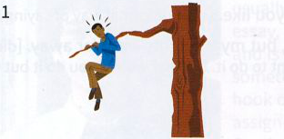
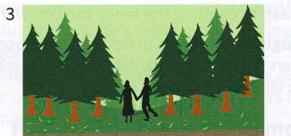
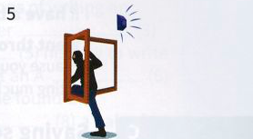
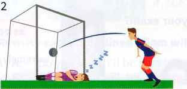
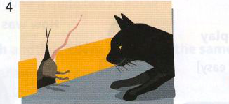
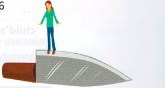

Exercises
17.1 Match the beginning of each idiom on the left with its ending on the right. A
1
be caught
a
limb
2
have a narrow
b
sound
3
safe and
c
alone
4
be led
d
escape
5
by the skin of your
e
stations
6
be panic
f
astray
7
leave well
g
napping
8
go out on a
h
teeth
17.2 Correct the mistakes in these idioms.
- When David suggested they should come and stay for a weekend, it set alarm clocks ringing in my mind.
- The patient's life is hanging by a string.
- Having to go to work is an evil necessity.
- Why do some people always cut a thing fine?
- They are on a knife-blade waiting for the results of Brian's medical tests.
- As the building was on fire, he had no choice but to put his life in the firemen's hand and climb out of the window and onto their ladder.
- You'll be taking the life in your hands if you make a speech like that to such an audience.
- I think it would be more sensible to leave good alone.
17.3 Which idioms do these pictures make you think of?






17.4 Rewrite each sentence with an idiom. Use the keyword in brackets.
- I suppose that exams are just something that you have to do. (EVIL)
- It was such a relief when Ralph arrived back from his Arctic expedition fit and healthy. (SOUND)
- You took an enormous risk by agreeing to go up in a helicopter with such an inexperienced pilot. (LIFE)
- The hurricane seems to be getting a bit too near to our town and I'm beginning to feel rather nervous. (COMFORT)
- If I were you, I wouldn't attempt to change things. (WELL)
- We were in a state of chaos before the important visitors arrived, but we managed to get everything under control in time for their visit. (STATIONS)
- We almost missed the train. (TEETH)
- I hope the other students won't distract our son from his studies. (LEAD)